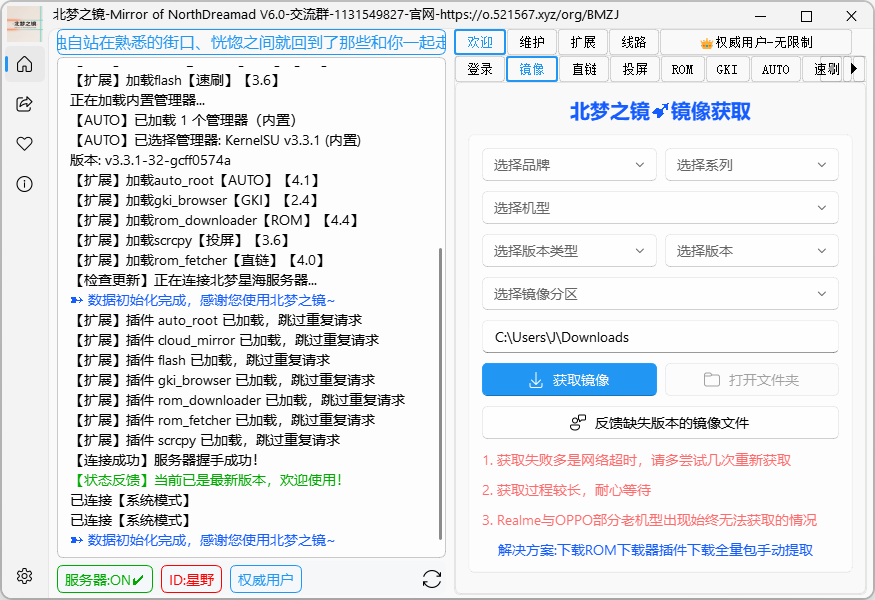
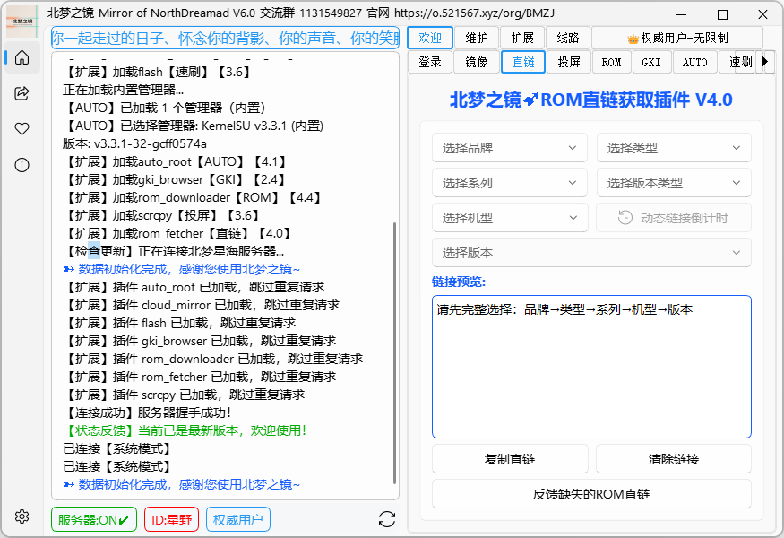
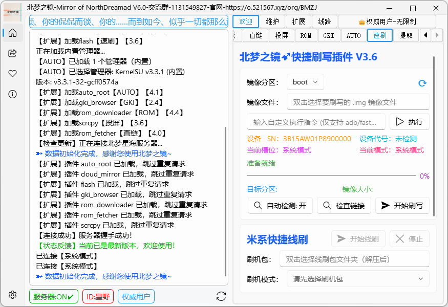
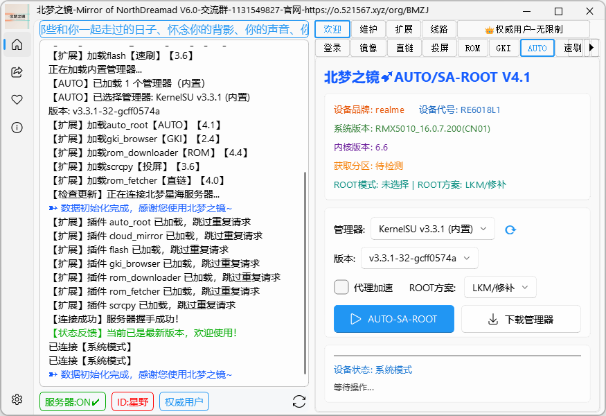
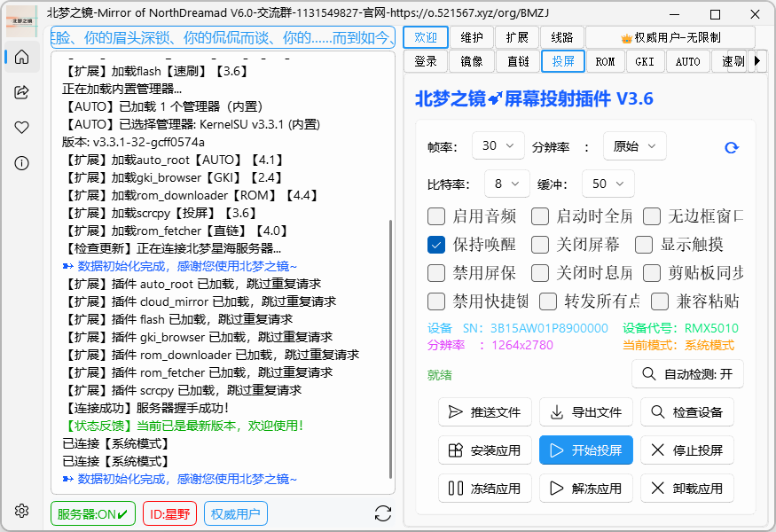
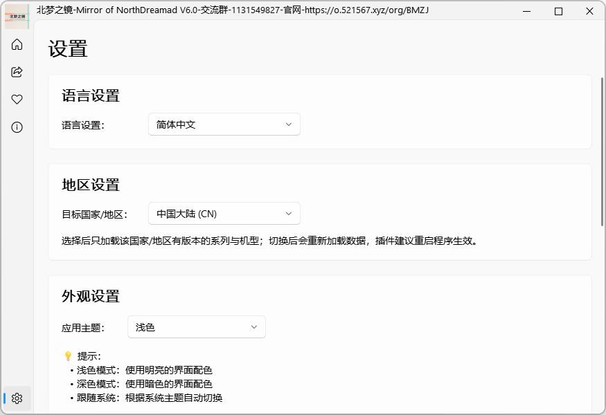
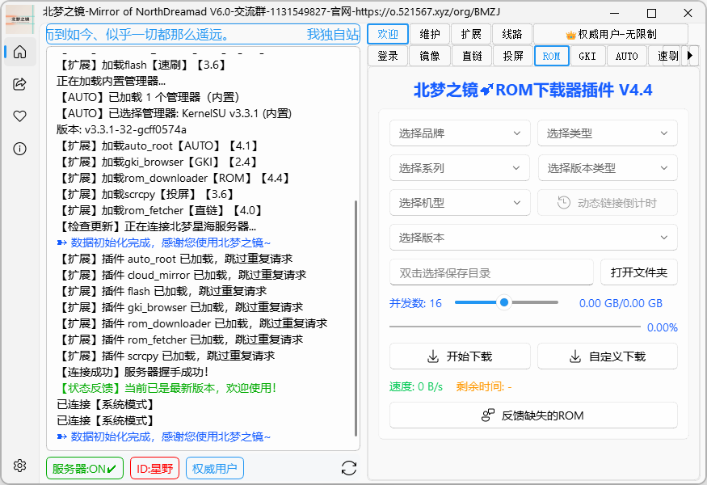
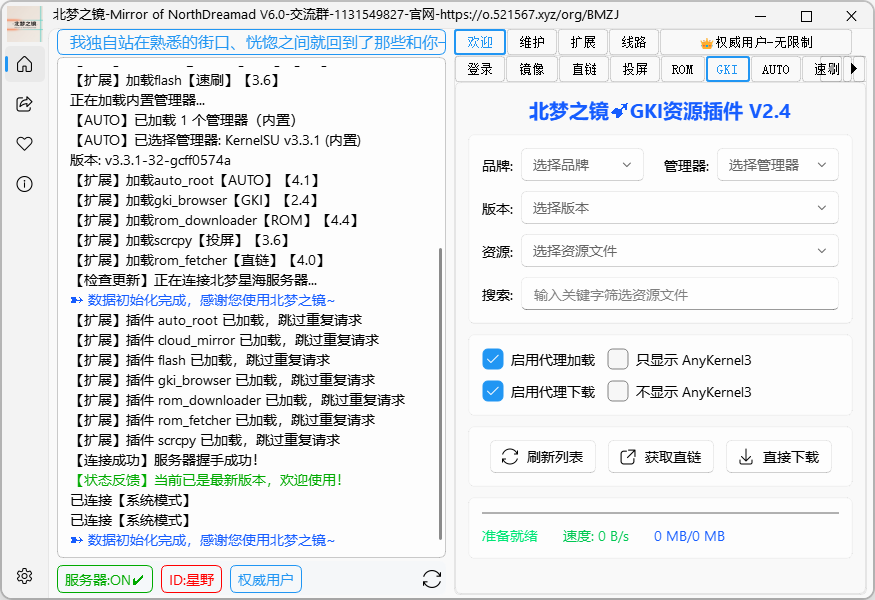
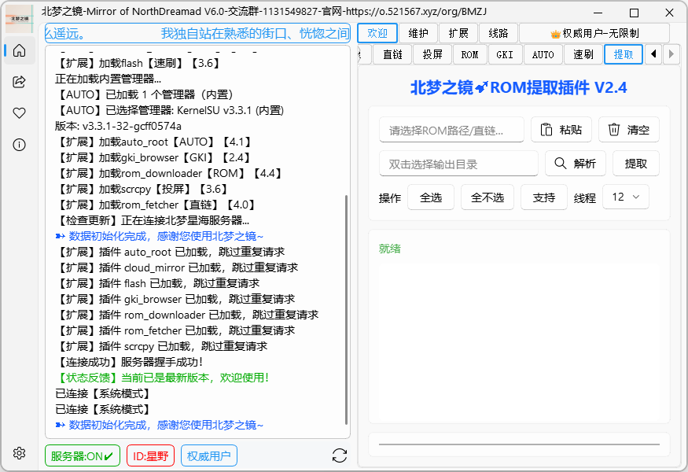
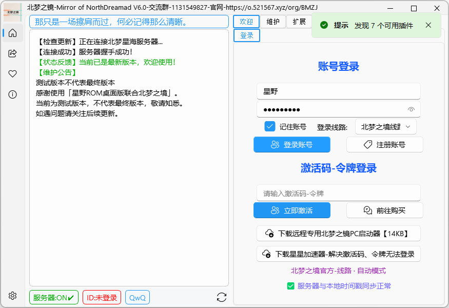

Service Status
全部服务运行正常，持续稳定提供 ROM 下载与刷机支持。
Core Features
全程覆盖，开箱即用，每一步都为刷机玩家量身打造。
从北梦星海镜像数据库一键获取 boot、init_boot、vendor_boot、recovery、dtbo、vbmeta 等常用分区镜像。支持 A/B 槽位（boot_a / boot_b），小米 / 红米自动走卡刷包 payload.bin 提取，Realme / OPPO 老机型提供全量包手动提取方案。

覆盖 15 大品牌的官方 ROM 直链，按 品牌 → 类型 → 系列 → 机型 → 版本 逐级筛选，一键解析官方直链与 10 分钟动态签名链接，即点即下，链接带倒计时刷新。

fastboot 分区刷写 + 米系线刷包一键解析，内置 adb / fastboot 无需配置环境，支持自定义指令执行、自动检测目标分区，刷写进度实时显示。

AUTO-SA-ROOT 全自动 ROOT，KernelSU 管理器手机端修补 → 监控下载目录抓回 → fastboot 刷入，14 步全自动完成，支持 init_boot / boot 分区与 LKM / 修补两种方案。

scrcpy 低延迟投屏，把手机屏幕实时投射到电脑。帧率 / 分辨率 / 比特率自由调节，支持保持唤醒、推送 / 导出文件、安装 / 冻结 / 卸载应用。

多语言界面 + 19 个地区自由切换，浅色 / 深色 / 跟随系统三种主题。切换地区后只加载该地区有版本的机型与系列，数据更精准。

Plugins
登录后自动发现并加载，无需手动配置，功能随插件持续更新。
ROM 直链获取插件。逐级选择品牌、类型、系列、机型、版本，一键解析官方直链与 10 分钟动态签名链接，复制即用。
并发下载 UI，aria2c 16 线程加速，实时显示速度 / 总大小 / 剩余时间，支持断点续传与自定义下载。

fastboot 分区刷写与米系线刷包解析，自定义 adb / fastboot 指令，内置工具无需配置环境，自动检测目标分区。
KernelSU 一键 ROOT，管理器手机端修补 + 监控抓回 + fastboot 刷入，14 步全自动，支持 init_boot / boot 与 LKM / 修补。
GKI 内核资源浏览与下载，支持 AnyKernel3 刷入包，按品牌 / 版本筛选，代理加载与下载加速。

payload.bin 分区提取，卡刷包 / 全量包直接解出 boot、init_boot 等镜像，支持多线程提取与分区勾选。

scrcpy 实时投屏，帧率 / 分辨率 / 比特率自定义，支持保持唤醒、推送 / 导出文件、安装 / 冻结应用。
Authority
账号 / 激活码登录，权威用户畅享全部功能。

账号登录 · 激活码登录 · 令牌登录
Brands
持续更新收录，官方 ROM 直链直达。
Catalog
真实数据，实时同步。
Notice
请在使用前仔细阅读以下条款。
欢迎使用「星野ROM」。在使用本应用程序之前，请仔细阅读以下条款：